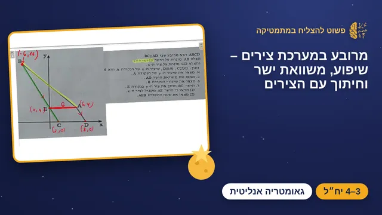

פשוט להצליח במתמטיקה › כל הנושאים › שאלון 371
3 יחידות – שאלון 371 (35371) – סרטוני הסבר לפי נושא
כל סרטוני ההסבר במתמטיקה לשאלון 371 – 13 סרטונים לפי הנושאים בתוכנית הלימודים: אחוזים, גדילה ודעיכה, גאומטריה אנליטית, התפלגות נורמלית וסטטיסטיקה, הסתברות. מתאים לכיתות י׳–י״א ולהכנה לבגרות.
📝 בחינות בגרות קודמות עם פתרונות: שאלון 35371 – כל המועדים
רוצים לעקוב אחרי ההתקדמות?נרשמים בחינם, וכל סרטון שראיתם מסומן ✓. ממשיכים מכל מכשיר.
הצטרפות בחינם ←אחוזים (5) לכל הסרטונים בנושא ←
 בעיות אחוזים מהקל אל הקשה – איך לעבוד נכון עם אחוזים 5
בעיות אחוזים מהקל אל הקשה – איך לעבוד נכון עם אחוזים 5 בעיות אחוזים מהקל אל הקשה – איך לעבוד נכון עם אחוזים 4
בעיות אחוזים מהקל אל הקשה – איך לעבוד נכון עם אחוזים 4 בעיות אחוזים מהקל אל הקשה – איך לעבוד נכון עם אחוזים 3בעיות אחוזים מהקל אל הקשה – איך לעבוד נכון עם אחוזים 1
בעיות אחוזים מהקל אל הקשה – איך לעבוד נכון עם אחוזים 3בעיות אחוזים מהקל אל הקשה – איך לעבוד נכון עם אחוזים 1 בעיות אחוזים מהקל אל הקשה – איך לעבוד נכון עם אחוזים 2
בעיות אחוזים מהקל אל הקשה – איך לעבוד נכון עם אחוזים 2גדילה ודעיכה (1) לכל הסרטונים בנושא ←

גאומטריה אנליטית (4) לכל הסרטונים בנושא ←

מרובע במערכת צירים – שיפוע, משוואת ישר וחיתוך עם הצירים גאומטריה אנליטית – נוסחאות, כלי העבודה ומשמעותם
גאומטריה אנליטית – נוסחאות, כלי העבודה ומשמעותם גאומטריה אנליטית – הסבר נוסחאות ופתרון תרגיל בגרות 3 יחגאומטריה אנליטית – נוסחאות ושאלות
גאומטריה אנליטית – הסבר נוסחאות ופתרון תרגיל בגרות 3 יחגאומטריה אנליטית – נוסחאות ושאלות